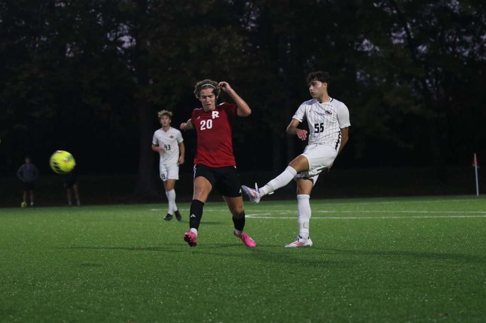

Athletic Career
Playing NCAA collegiate soccer demands grit, time management, leadership, and resilience. Translating the focus needed on the pitch directly into software engineering has helped me become a reliable teammate under high pressure.
Competitive Milestones
- University of Indianapolis Men's Soccer Team (2023 – Present): Active varsity team member; proud contributor to our 2023 GLVC Conference Championship season.
- Fairfield High School Varsity Soccer (2019 – 2023): Four-year student-athlete in the Greater Miami Conference, building team cohesion and work ethic.
Heritage & Travel
Originally from Bosnia, I return to visit family every summer and travel across Europe, frequently spending time on the coast of Croatia. These trips keep me grounded and connected with diverse international cultures.
Leisure & Community
Outside of programming and soccer, I enjoy strategy games and competitive gaming (FIFA, Call of Duty), following NFL football (passionate Cincinnati Bengals fan), and mentoring youth at community sports camps.